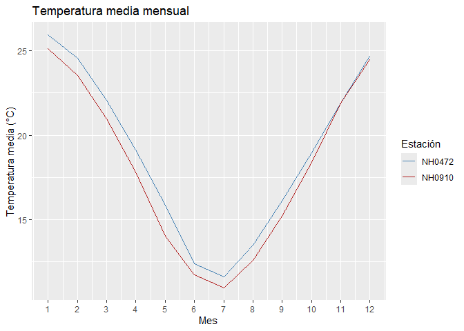

cienciademetadatosR es un paquete de R para trabajar con datos meteorológicos diarios de estaciones del INTA. Sirve para descargar los datos de una estación, resumir sus temperaturas y graficar cómo varía la temperatura a lo largo del año.
Aclaración
Este paquete está pensado para ser usado de prueba, no está pensado para ser usado como tal
Instalación
Se puede instalar la versión en desarrollo desde GitHub:
# install.packages("devtools")
devtools::install_github("joaquin0307/cienciademetadatosR")Funciones
| Función | Qué hace |
|---|---|
leer_datos() |
Descarga los datos de una estación y los devuelve como data frame. |
tabla_resumen_temperatura() |
Calcula mínima, máxima, promedio y desvío de la temperatura por estación. |
grafico_temperatura_mensual() |
Grafica la temperatura media de cada mes, con una línea por estación. |
El paquete también incluye el conjunto de datos estaciones, con registros diarios de temperatura de 5 estaciones entre 2010 y 2017, para usar en los ejemplos.
Ejemplos
Primero cargamos el paquete:
Los datos de ejemplo
El dataset estaciones tiene una fila por día y por estación, con la temperatura media, máxima y mínima medida en el abrigo meteorológico a 150 cm. Estas son las primeras filas:
| id | fecha | temperatura_abrigo_150cm | temperatura_abrigo_150cm_maxima | temperatura_abrigo_150cm_minima |
|---|---|---|---|---|
| NH0472 | 2010-01-01 | 23.35 | 27.5 | 19.2 |
| NH0472 | 2010-01-02 | 23.85 | 31.9 | 15.8 |
| NH0472 | 2010-01-03 | 26.00 | 31.8 | 20.2 |
| NH0472 | 2010-01-04 | 28.00 | 34.5 | 21.5 |
| NH0472 | 2010-01-05 | 27.50 | 36.1 | 18.9 |
| NH0472 | 2010-01-06 | 22.05 | 25.5 | 18.6 |
Descargar los datos de una estación: leer_datos()
Descarga el archivo completo de una estación desde internet, lo guarda en la ruta que le indiques y lo devuelve como tabla. Sirve cuando necesitás todas las variables o todos los años de una estación, y no solo el recorte de estaciones.
datos_nh0437 <- leer_datos("NH0437", destino = "NH0437.csv")Resumir las temperaturas: tabla_resumen_temperatura()
Calcula, para cada estación, la temperatura mínima y máxima registradas, y el promedio y el desvío estándar de la temperatura media. Sirve para comparar rápidamente el clima de varias estaciones.
knitr::kable(
tabla_resumen_temperatura(estaciones, ids = c("NH0472", "NH0910")),
digits = 1
)| id | temp_minima | temp_maxima | promedio | desvio |
|---|---|---|---|---|
| NH0472 | -6.0 | 40.6 | 19 | 5.9 |
| NH0910 | -7.5 | 43.0 | 18 | 6.2 |
Graficar la temperatura a lo largo del año: grafico_temperatura_mensual()
Calcula la temperatura media de cada mes y dibuja una línea por estación, así se ve el ciclo anual de la temperatura (verano e invierno).
grafico_temperatura_mensual(
estaciones,
ids = c("NH0472", "NH0910"),
colores = c("steelblue", "firebrick"),
titulo = "Temperatura media mensual"
)
Para un recorrido más completo, ver la viñeta: vignette("cienciademetadatosR").
Autores
- Máximo Bustos
- Joaquín Larroux
Trabajo realizado para el curso Introducción a la programación.
Cómo contribuir
Si querés contribuir a este paquete, leé la guía de contribución.
Este proyecto tiene un código de conducta. Al participar, aceptás cumplir con sus términos.